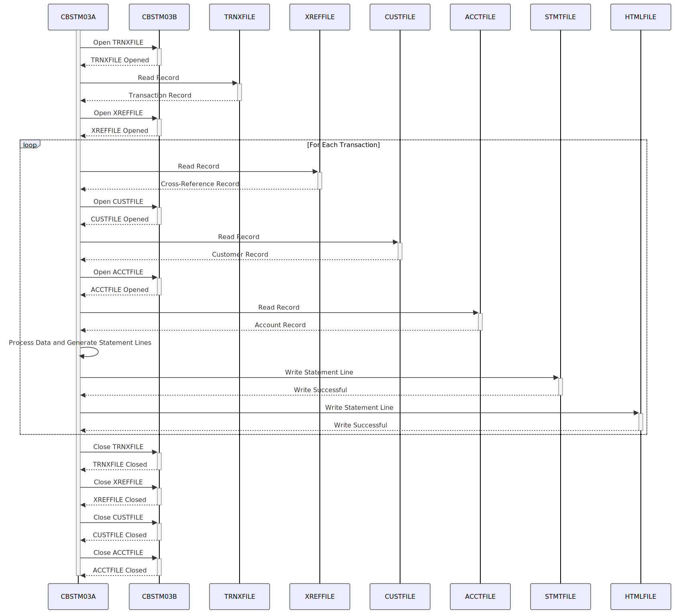

Gerado em: 1º de outubro de 2024
Título do Documento: Geração de Extrato de Conta CardDemo - Especificação do Programa
Descrição Resumida:
O programa de Geração de Extrato de Conta CardDemo é um processo em lote que gera extratos de conta para portadores de cartão de crédito. Ele recupera dados do cliente, detalhes da conta e histórico de transações de várias fontes, calcula as despesas totais e produz extratos em formato de texto simples e HTML.
Histórias do Usuário:
Como analista de dados, preciso ter certeza de que apenas registros válidos sejam usados na análise para que os relatórios gerados sejam precisos e confiáveis.
Épico Relacionado:
5 - Relatórios e Análise
Requisitos Técnicos:
- Extração e Validação de Dados:
- O programa lê dados de quatro arquivos de entrada:
TRNXFILE (Arquivo de Transação), XREFFILE (Arquivo de Referência Cruzada), CUSTFILE (Arquivo do Cliente) e ACCTFILE (Arquivo da Conta).
- Manipulação de Arquivos:
- O programa abre, lê e fecha cada arquivo sequencialmente.
- A sub-rotina
CBSTM03B lida com operações de arquivo.
- Validação de Dados:
- Garante que as transações estejam vinculadas às contas e clientes corretos.
- Verifica a integridade dos dados em todos os arquivos de entrada.
- Geração de Extrato:
- Estrutura do Extrato:
- Dois formatos: texto simples (extrato bancário tradicional) e HTML (para visualização online).
- O extrato de texto simples usa a estrutura de dados
STATEMENT-LINES para layout.
- O extrato HTML usa a estrutura de dados
HTML-LINES e CSS inline para estilo.
- Processamento de Transações:
- Processa transações para cada cliente com base no número do cartão de crédito.
WS-TRNX-TABLE (uma matriz bidimensional) armazena dados de transações.
- Cálculos:
- Calcula as despesas totais para o período do extrato de cada cliente.
- A variável
WS-TOTAL-AMT acumula os valores das transações.
- Tratamento de Erros e Registro:
- Implementa tratamento de erros para operações de arquivo (abrir, ler, fechar) usando códigos de retorno de
CBSTM03B.
- Exibe mensagens de erro e potencialmente termina de forma anormal usando
CEE3ABD em caso de erros graves.
Modelos Relacionados
CARD-XREF-RECORD: Contém informações de referência cruzada, incluindo XREF-CUST-ID, XREF-ACCT-ID e XREF-CARD-NUM.CUSTOMER-RECORD: Contém informações do cliente, como CUST-FIRST-NAME, CUST-MIDDLE-NAME, CUST-LAST-NAME, CUST-ADDR-LINE-1, CUST-ADDR-LINE-2, CUST-ADDR-LINE-3, CUST-ADDR-STATE-CD, CUST-ADDR-COUNTRY-CD, CUST-ADDR-ZIP e CUST-FICO-CREDIT-SCORE.ACCOUNT-RECORD: Contém detalhes da conta, como ACCT-ID e ACCT-CURR-BAL.TRNX-RECORD: Representa um registro de transação com TRNX-CARD-NUM, TRNX-ID, TRNX-DESC e TRNX-AMT.
Configurações:
- Nomes de Arquivos:
TRNXFILE: Caminho do arquivo de transação.XREFFILE: Caminho do arquivo de referência cruzada.CUSTFILE: Caminho do arquivo do cliente.ACCTFILE: Caminho do arquivo da conta.STMTFILE: Caminho do arquivo de saída para extratos de texto simples.HTMLFILE: Caminho do arquivo de saída para extratos HTML.
- Formatos de Dados:
- Layouts de registro para todos os arquivos de entrada e saída precisam ser definidos.
- O extrato HTML usa CSS inline para estilo.
Melhorias de Código:
- Tratamento de Erros:
- Implementar tratamento de erros mais robusto, incluindo códigos de erro específicos e mensagens para diferentes cenários de erro.
- Considere o uso de um mecanismo de registro para registrar erros e outros eventos relevantes para fins de depuração e auditoria.
- Otimização de Desempenho:
- Explorar o uso de técnicas de classificação e indexação para otimizar a recuperação de dados dos arquivos de entrada, especialmente para conjuntos de dados grandes.
- Considere o uso de um banco de dados para armazenamento e recuperação de dados em vez de arquivos simples para melhorar o desempenho.
- Estrutura do Código:
- Refatorar o código dividindo parágrafos grandes em seções menores e mais gerenciáveis para melhorar a legibilidade e a manutenção.
- Use nomes de variáveis significativos e comentários para aprimorar a compreensão do código.
- Modernização:
- Avaliar a viabilidade de migrar o programa para uma linguagem de programação e plataforma modernas para melhorar a manutenção, escalabilidade e segurança.
Melhorias de Segurança:
- Controle de Acesso:
- Implementar mecanismos de controle de acesso para restringir o acesso não autorizado a arquivos de dados confidenciais e ao próprio programa.
- Criptografia de Dados:
- Considere criptografar dados confidenciais em repouso e em trânsito para proteger as informações do cliente.
- Auditoria:
- Implementar uma trilha de auditoria para rastrear todo acesso a dados e modificações para fins de segurança e conformidade.
Diagrama Conceitual:

–Made by “Smart Engineering” (by Compass.UOL)–